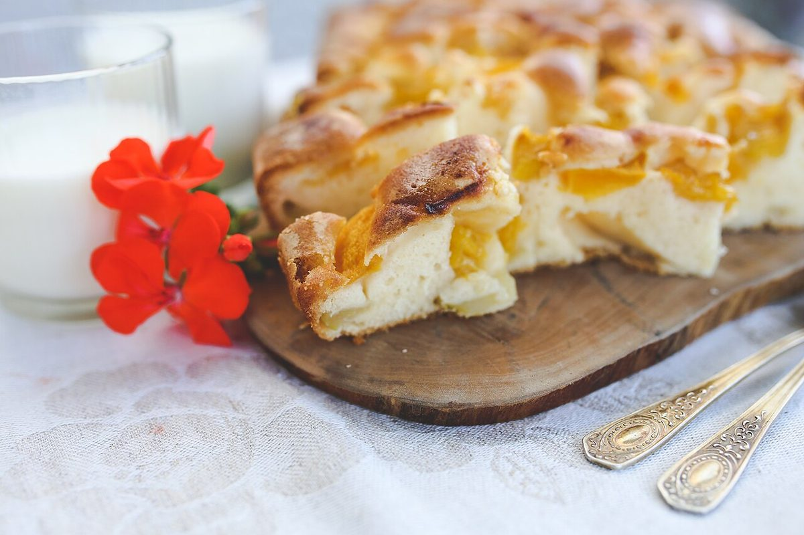
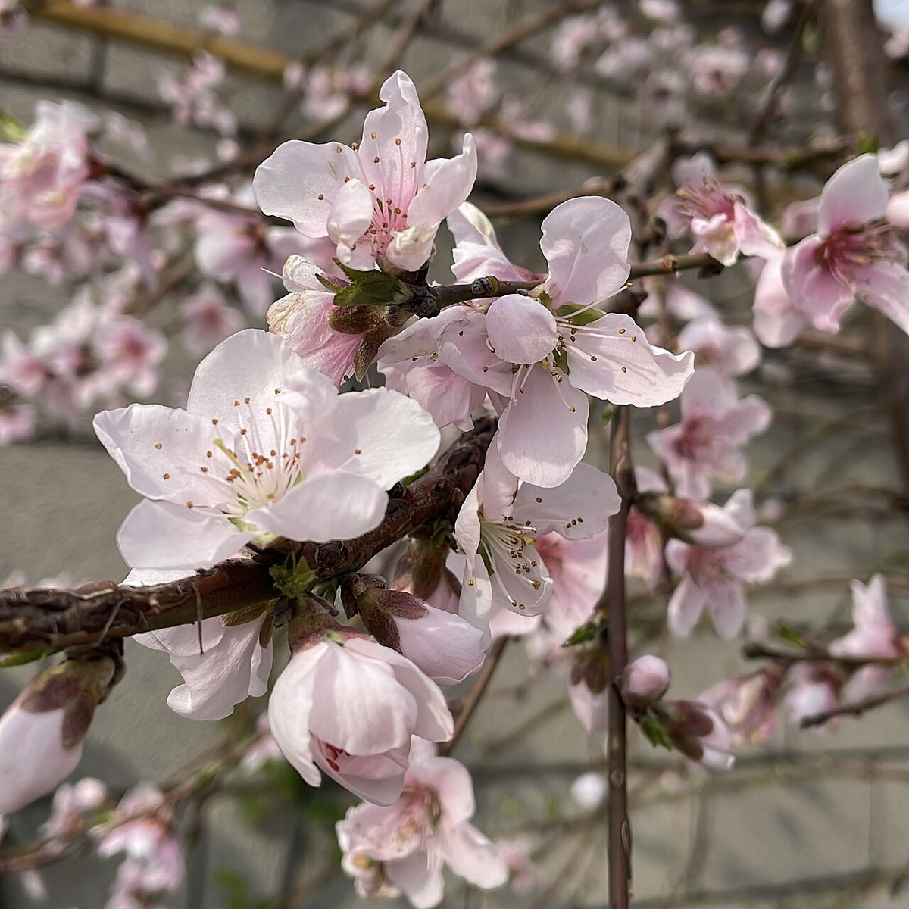
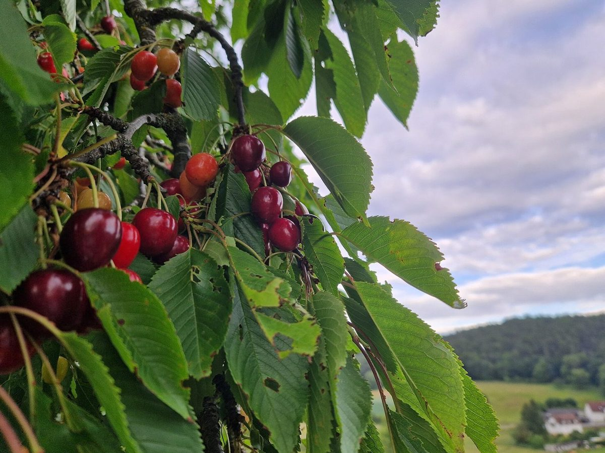
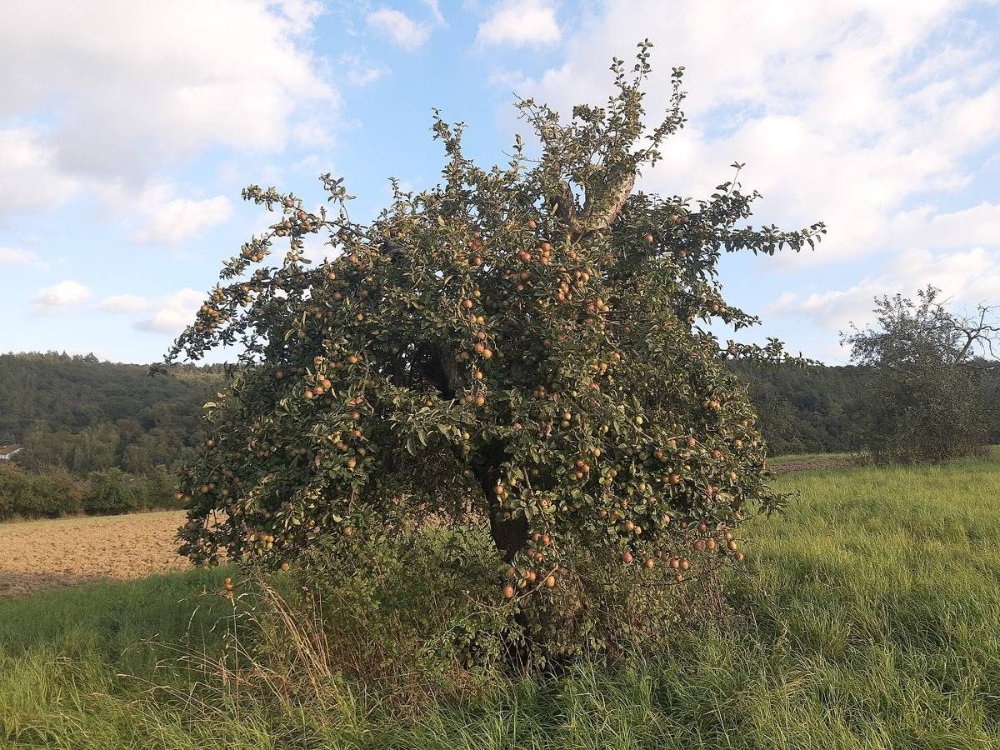
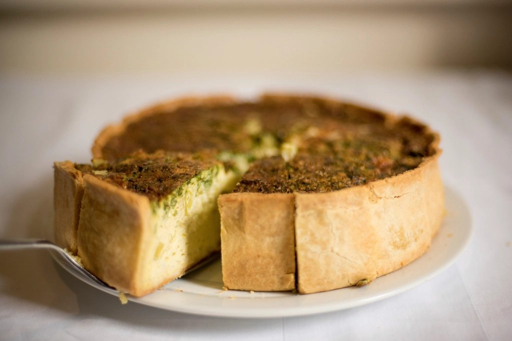
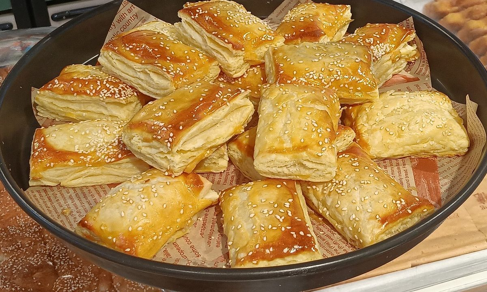
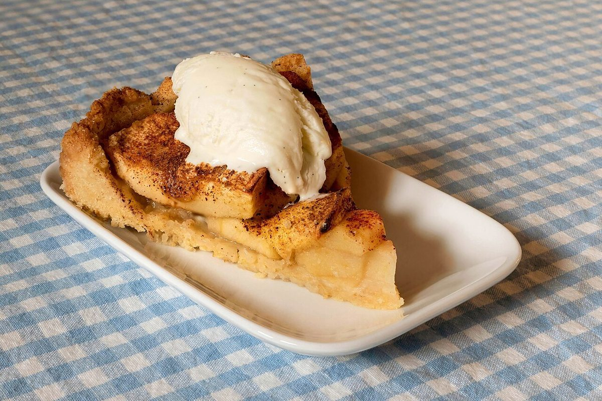
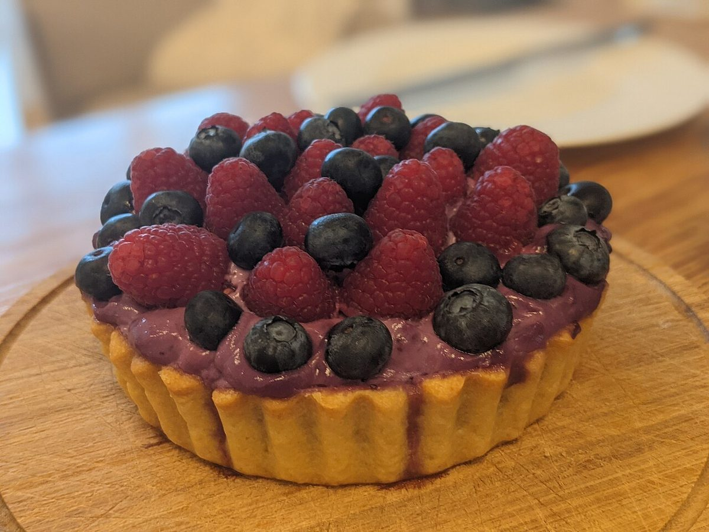
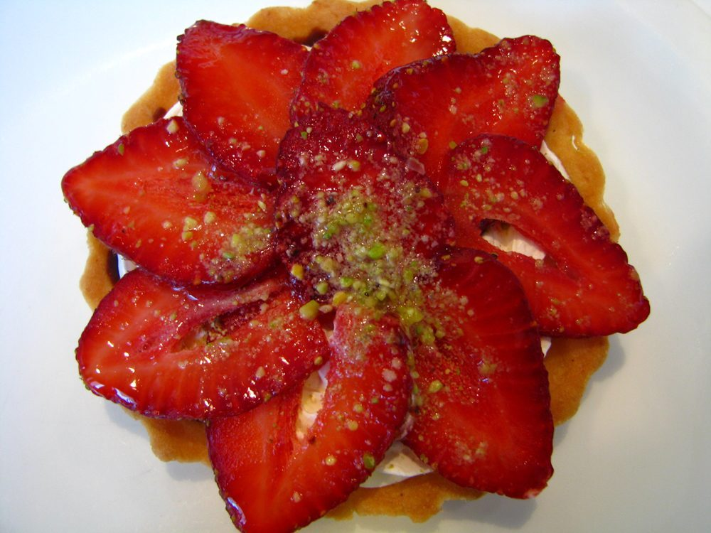
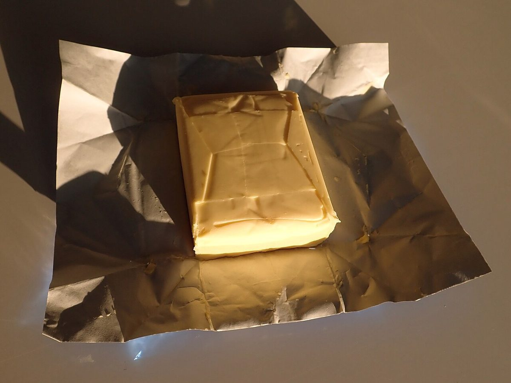

山梨県北杜市武川町 / 農園のパイとキッシュ
WANPAKUDO畑でみのった季節を、
手折りのパイにのせて。
桃とぶどうを育てる農家と、お菓子づくりを学んだパティシエ。ふたりの「やってみたい」が、北杜の小さな店になりました。

お店の由来・想い
農家の夫と、パティシエの妻。
紹介記事によると、わんぱく堂は2024年4月12日に開店した、桃とぶどうの農家が営む「ファーマーズペストリー」のお店です。ご主人は山梨県出身で、2016年に会社を離れて就農を志し、県の農業大学校で果樹栽培を学んだのち、ぶどうと桃の畑を営んでこられました。奥さまは静岡県出身で、老舗和菓子店の長女として育ち、パティシエとして修業を積んだ方です。
「農業とお菓子づくりを合わせて、自分たちのお店を持つ」という長年の願いを、築約70年の家を改装して形にしました。お子さんにも自信をもって食べさせられるものを、という想いも紹介されています。果物は自分たちの畑のもの、野菜は近隣の農家、卵は明野のものと、できるだけ地元の食材を使っています。
情報源: 甲府経済新聞(2024年4月) / ポルタ / Instagram
店名「わんぱく堂」の由来は確認できませんでした。上記の事実以外の見出し・言い回しは制作側の表現です。





メニュー
毎週かわる、パイとキッシュ。
紹介記事では、パイとキッシュを中心に、パンやタルトなどの焼き菓子も扱うと紹介されています。種類は週ごとに入れ替わり、桃やぶどうの季節には畑の果物を使ったパイが登場するとのことです。
パイ
果物や季節の素材の焼き菓子。種類は毎週入れ替わると紹介されています。
キッシュ
野菜や卵など地元の食材を使った、食事向きの一品です。
パン・タルトなど
少量の焼き菓子やパンも並ぶと紹介されています。
営業時間・定休日・価格
準備中 最新情報はInstagramをご覧ください。







口コミ
こんな声が届きそうです。
季節の果物のパイが楽しみで、つい立ち寄ってしまいます。サクサクの生地が印象的でした。
キッシュは野菜の味がしっかり。ランチ代わりに買って帰りました。
畑のあるお店ならではのやさしい味。家族へのお土産にしました。
口コミは制作側が作成したイメージ例で、実在のお客様の声ではありません。